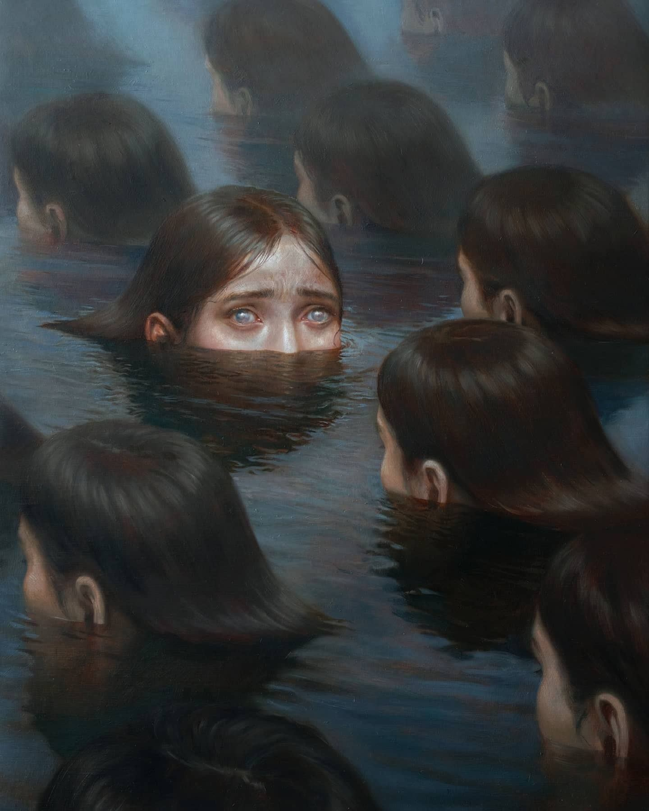
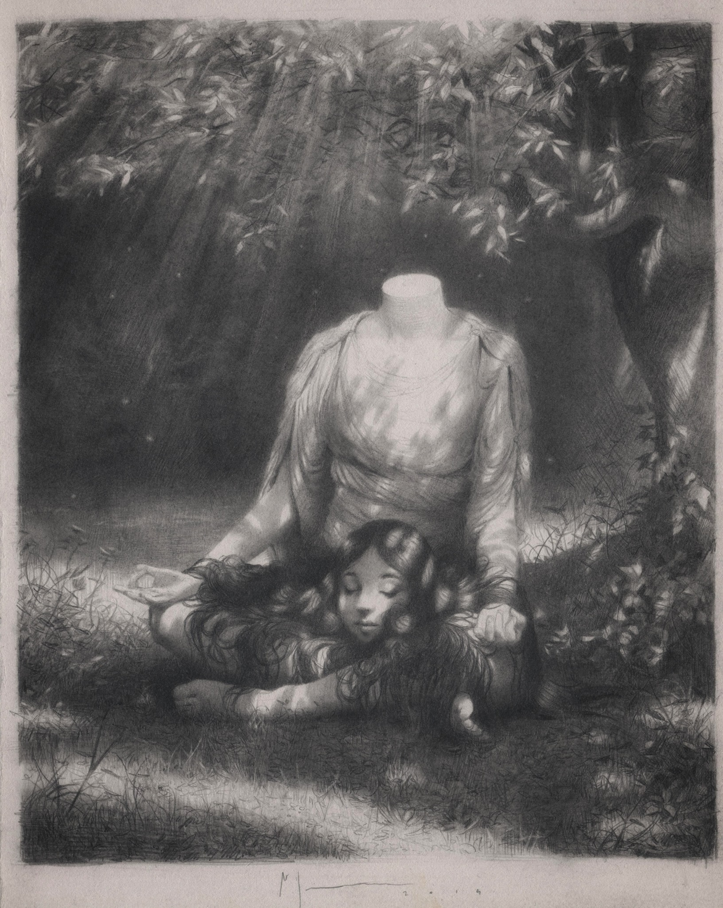
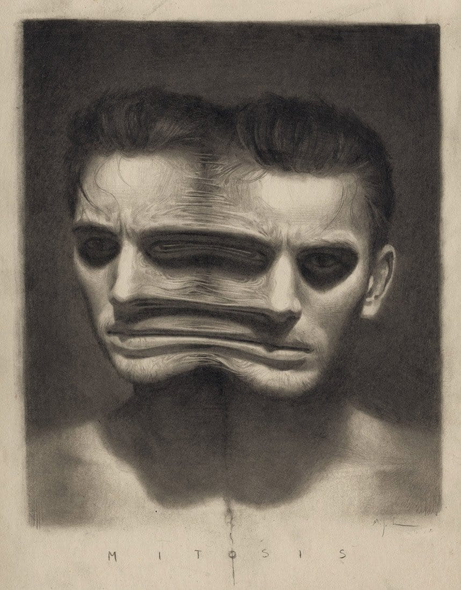

Miles Johnston - Painter
A contemporary visual artist known for his surreal and thought-provoking creations. With a distinctive style that blurs the boundaries between reality and imagination, Johnston's work often explores themes of identity, introspection, and the human psyche.
Countercurrent
One of my favourites from him
Having No Head
One of my favourites from him
Mitosis
One of my favourites from him